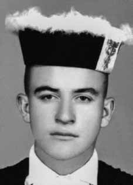

Antônio
dos Três
Reis
de Oliveira
CIRCUNSTÂNCIAS DA MORTE
Antônio dos Três Reis de Oliveira foi executado com Alceri Maria Gomes da Silva, em São Paulo no dia 17 de maio de 1970. Presos políticos de São Paulo denunciaram, em depoimentos, que as execuções de Antônio e Alceri foram realizadas por agentes da Operação Bandeirantes (OBAN), que invadiram a casa de Alceri e os mataram sumariamente. A confirmação da morte tanto de Antônio quanto de Alceri pode ser verificada em um documento localizado nos arquivos do Departamento de Ordem Política e Social de São Paulo.
Relatório produzido pelo comandante do Destacamento de Operações de Informações (DOI) do II Exército, major Carlos Alberto Brilhante Ustra, descreve que uma equipe do DOI foi designada para se dirigir ao “aparelho” em que estavam Alceri e Antônio para prendê-los. Ao chegar ao local, os agentes teriam realizado uma revista minuciosa e os encontraram em um alçapão. Ao serem descobertos, segundo relato, teriam atirado na direção dos policiais, sendo executados em seguida. Em depoimento ao jornal Folha de São Paulo, divulgado em 8 de dezembro de 2010, o tenente-coronel Maurício Lopes Lima, chefe de buscas da OBAN, afirmou ter integrado a operação que resultou nas execuções de Antônio e Alceri, porém responsabilizou a equipe chefiada pelo capitão Francisco Antônio Coutinho e Silva pelas execuções.
O tenente-coronel ressaltou que fora informado sobre um alçapão existente no “aparelho” onde estavam Antônio e Alceri e que, ao tentar abri-lo, teria sido alvejado por Antônio, confirmando que este morreu durante a ação policial e que Alceri morreria logo a seguir a caminho do hospital. Esta versão também foi apresentada pelos relatórios dos Ministérios da Aeronáutica e da Marinha, encaminhados ao Ministério da Justiça em 1993. O laudo de exame de corpo de delito, assinado pelos médicos legistas João Pagenoto e Abeylard Queiroz Orsini, localizado nos arquivos do Instituto Médico Legal (IML/SP) em 1990, destaca apenas único tiro no olho direito de Antônio.
Com a abertura dos arquivos do DOPS-PR, em 1991, foram localizadas informações sobre a morte e o local de sepultamento de Antônio. O nome de Antônio foi encontrado em uma gaveta com a identificação “falecidos”, constando que teria sido enterrado como indigente no Cemitério de Vila Formosa, na capital paulista, em 21 de maio de 1970. Em 10 de dezembro de 1991, com a presença de seus familiares, a equipe de técnicos da Unicamp, a Comissão Especial de Investigação das Ossadas de Perus e a Comissão de Familiares de Mortos e Desaparecidos Políticos tentaram a exumação de seus restos mortais, mas, diante de alterações feitas no cemitério de Vila Formosa, não obtiveram sucesso em sua localização. De acordo com os coveiros daquele cemitério, em 1976, restos mortais foram removidos e colocados em local não identificado do cemitério.
Antônio dos Três Reis de Oliveira was executed with Alceri Maria Gomes da Silva, in São Paulo on May 17, 1970. Political prisoners from São Paulo denounced, in statements, that the executions of Antônio and Alceri were carried out by agents from Operação Bandeirantes (OBAN), who invaded Alceri's house and summarily killed them. Confirmation of the death of both Antônio and Alceri can be verified in a document located in the archives of the Department of Political and Social Order of São Paulo.
Report produced by the commander of the Information Operations Detachment (DOI) of the II Army, Major Carlos Alberto Brilhante Ustra, describes that a team from the DOI was assigned to go to the “apparatus” where Alceri and Antônio were in to arrest them. Upon arriving at the scene, the agents carried out a thorough search and found them in a trapdoor. When discovered, according to reports, they allegedly shot at the police officers and were then executed. In a statement to the Folha de São Paulo newspaper, released on December 8, 2010, Lieutenant Colonel Maurício Lopes Lima, head of searches at OBAN, stated that he was part of the operation that resulted in the executions of Antônio and Alceri, but held the team led by Captain Francisco Antônio Coutinho e Silva responsible for the executions.
The lieutenant colonel highlighted that he had been informed about a trap door in the “apparatus” where Antônio and Alceri were and that, when trying to open it, he had been shot by Antônio, confirming that he died during the police action and that Alceri would die shortly afterwards on the way to the hospital. This version was also presented by the reports from the Ministries of Aeronautics and the Navy, sent to the Ministry of Justice in 1993. The corpus delicti examination report, signed by coroners João Pagenoto and Abeylard Queiroz Orsini, located in the archives of the Instituto Médico Legal (IML/SP) in 1990, highlights only a single gunshot to Antônio's right eye.
With the opening of the DOPS-PR archives in 1991, information about Antônio's death and burial place was located. Antônio's name was found in a drawer with the identification “deceased”, stating that he was buried as a pauper in the Vila Formosa Cemetery, in the capital of São Paulo, on May 21, 1970. On December 10, 1991, with the presence of his family members, the team of technicians from Unicamp, the Special Commission for the Investigation of the Bones of Peru and the Commission for Relatives of Political Dead and Missing Persons attempted to exhumation of his remains, but, due to changes made to the Vila Formosa cemetery, they were unsuccessful in locating them. According to the gravediggers at that cemetery, in 1976, mortal remains were removed and placed in an unidentified location in the cemetery.
Antônio dos Três Reis de Oliveira fue ejecutado con Alceri Maria Gomes da Silva, en São Paulo, el 17 de mayo de 1970. Presos políticos paulistas denunciaron, en declaraciones, que las ejecuciones de Antônio y Alceri fueron realizadas por agentes de la Operação Bandeirantes (OBAN), que invadieron la casa de Alceri y los asesinaron sumariamente. La confirmación de la muerte tanto de Antônio como de Alceri puede verificarse en un documento ubicado en el archivo del Departamento de Orden Político y Social de São Paulo.
Informe elaborado por el comandante del Destacamento de Operaciones de Información (DOI) del II Ejército, mayor Carlos Alberto Brilhante Ustra, describe que un equipo del DOI fue asignado para ir al “aparato” donde se encontraban Alceri y Antônio para arrestarlos. Al llegar al lugar, los agentes realizaron un minucioso registro y los encontraron en una trampilla. Cuando fueron descubiertos, según los informes, presuntamente dispararon contra los agentes de policía y luego fueron ejecutados. En una declaración al diario Folha de São Paulo, publicada el 8 de diciembre de 2010, el teniente coronel Maurício Lopes Lima, jefe de búsquedas de la OBAN, afirmó que formó parte de la operación que resultó en las ejecuciones de Antônio y Alceri, pero responsabilizó de las ejecuciones al equipo dirigido por el capitán Francisco Antônio Coutinho e Silva.
El teniente coronel destacó que había sido informado sobre una trampilla en el “aparato” donde estaban Antônio y Alceri y que, al intentar abrirla, Antônio le había disparado, confirmando que murió durante la acción policial y que Alceri moriría poco después camino al hospital. Esta versión también fue presentada por los informes de los Ministerios de Aeronáutica y de Marina, enviados al Ministerio de Justicia en 1993. El informe de examen del cuerpo del delito, firmado por los médicos forenses João Pagenoto y Abeylard Queiroz Orsini, localizado en el archivo del Instituto Médico Legal (IML/SP) en 1990, destaca sólo un disparo en el ojo derecho de Antônio.
Con la apertura del archivo del DOPS-PR, en 1991, se localizó información sobre la muerte y el lugar de sepultura de Antônio. El nombre de Antônio fue encontrado en un cajón con la identificación “fallecido”, indicando que fue enterrado como indigente en el Cementerio de Vila Formosa, en la capital de São Paulo, el 21 de mayo de 1970. El 10 de diciembre de 1991, con la presencia de sus familiares, el equipo de técnicos de la Unicamp, la Comisión Especial de Investigación de los Huesos del Perú y la Comisión de Familiares de Políticos Muertos y Desaparecidos intentaron exhumación de sus restos, pero, debido a modificaciones realizadas en el cementerio de Vila Formosa, no lograron localizarlos. Según los sepultureros de ese cementerio, en 1976, restos mortales fueron retirados y colocados en un lugar no identificado del cementerio.